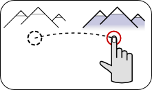

| Home · All Classes · Modules · QSS HELP · QSS 案例 · VER007 HOME |
该QPanGesture类描述由用户作出的平移手势。More...
继承QGesture。
该QPanGesture类描述由用户作出的平移手势。

手势使用手势在你的应用程序在处理Qt和信息的概述，请参阅Gestures Programming文档。
该parent的说法，如果不是没有，原因self通过Qt的，而不是PyQt的拥有。
| PyQt 4.10.3 for X11 | Copyright © Riverbank Computing Ltd and Nokia 2012 | Qt 4.8.5 |